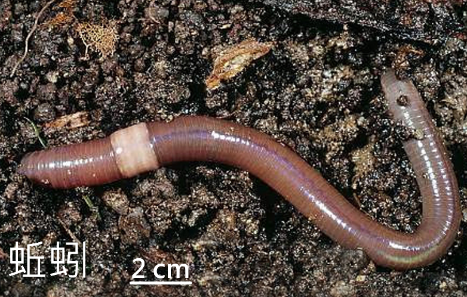
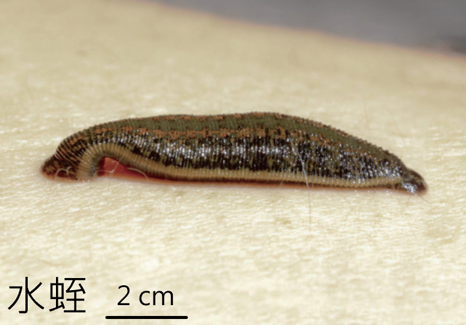
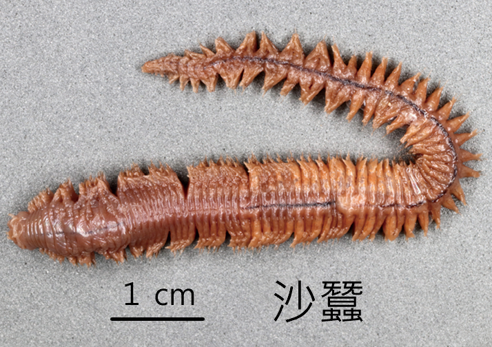
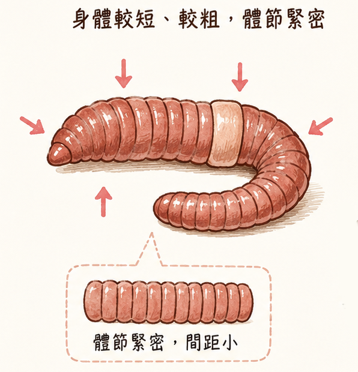

環節動物身體柔軟細長，最明顯的線索是身體一圈一圈的環狀分節，常利用體壁肌肉伸縮爬行。
環節動物的身體通常柔軟細長，具有一圈一圈的環狀分節。
牠們多利用體壁肌肉伸縮來爬行。觀察時，可以先找身體是否有規律的環狀分節，再思考牠如何移動。
常見的環節動物有蚯蚓、水蛭和沙蠶等。

蚯蚓身體柔軟細長，有環狀分節。
水蛭身體也具分節，屬於環節動物。
沙蠶常生活在水域或潮間帶環境。
按下按鈕，觀察身體一節一節的部分如何伸長、收縮。這個小動畫是示意圖，幫助你理解「體壁肌肉伸縮爬行」。